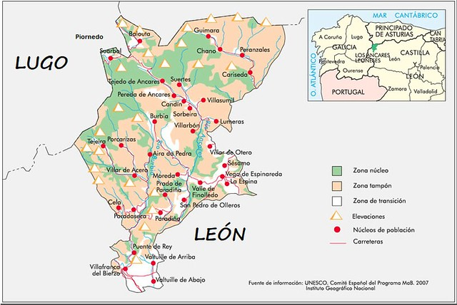

Historia

La historia del topónimo y de la región a la que se refiere van muy ligadas a la geografía, a la ecología
y la etnografía del entorno más o menos próximo al valle de Ancares; pero los límites últimos de esta región obedecen a razones administrativo-políticas
En el Catastro de Ensenada, llevado a cabo desde 1749, las poblaciones de Candín, Pereda, Suertes, Espinareda de Ancares, Tejedo, Lumeras y
Villasumil figuran como parte de la jurisdicción de realengo «Valle de Ancares», perteneciente al partido de Ponferrada. Según Pascual Madoz, el valle de Ancares
formaba parte del partido judicial de Villafranca del Bierzo y comprendía las localidades de Candín, Pereda, Sorbeira, Villasumil, Suertes, Espinareda, Tejedo, Lumeras,
Villarbón, Balouta y Suárbol. Sus habitantes se dedicaban al comercio de, entre otros, cera, aguardiente, pescados y sardinas por las ferias y mercados de la provincia.
Producía ganado vacuno y lanar, además de legumbres, patatas, centeno y lino. La industria consistía en varios molinos harineros y varios telares de lana y lino.
En la segunda mitad del XX y hasta 1991 se llevan acabo una serie de decisiones políticas referentes al medio ambiente que incluyen la declaración del valle como parte del Plan de Espacios Naturales Protegidos de Castilla y León.
En cualquier caso es destacable los rasgoso culturales propios de Galicia aunque se trate de un área ubicada en la provincia de León. Así pues la lengua mas común es el gallego, así como las tradiciones musicales y culturales son mas propias de
|

|